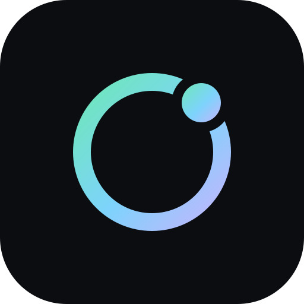

Every idea that reshapes AI engineering eventually gets a minimal implementation you can hold in your head. The nano series is that for agent loops and harness engineering — real, working systems, kept deliberately small, and mapped chapter-by-chapter onto the harness-101 course.
每个重塑 AI 工程的思想，最终都会有一个能装进脑子里的最小实现。nano 系列就是 agent loop 与 harness engineering 的最小实现——真实可运行的系统，刻意保持小巧， 并与 harness-101 课程逐章对应。
Three layers of one stack: a single agent loop, an orchestrator that runs many of them, and the distributed backend that runs the fleet.
同一套技术栈的三个层次：单个 agent loop、批量调度它的编排器、以及运行整个集群的分布式后端。
A minimal AI coding assistant — the agent loop, tools, and context management without framework bloat. TUI + daemon modes, swarm multi-agent, sandboxed by default.
极简 AI 编程助手——agent loop、工具与上下文管理，没有框架包袱。TUI + daemon 双模式，swarm 多智能体，默认沙箱隔离。
A lightweight orchestration service for running coding agents on tracked issues — plan runs with DAG execution, human approval gates, cost budgets, and a web dashboard.
轻量级 agent 编排服务——把 coding agent 跑在可追踪的 issue 上：DAG plan run、人工审批门禁、成本预算和 Web 仪表盘。
Distributed execution for agents — a gateway/worker architecture that runs agent fleets in isolated Docker runtimes, with pairing-based onboarding and an admin console.
agent 的分布式执行——gateway/worker 架构，在隔离的 Docker 运行时里运行 agent 集群，配对式接入和管理控制台。
Each factor links to the course chapter, the starter code, and the nano implementation.
每个因素都链到课程章节、骨架代码和 nano 中的实现。
pkg/agent is the loop the course asks you to write, at production scale.pkg/agent 就是课程让你手写的那个 loop 的生产级版本。pkg/llm and the sandbox docs, then run nano-agent in its strictest permission mode and watch it refuse things.pkg/llm 和沙箱文档，然后把 nano-agent 开到最严权限模式，看它如何拒绝操作。